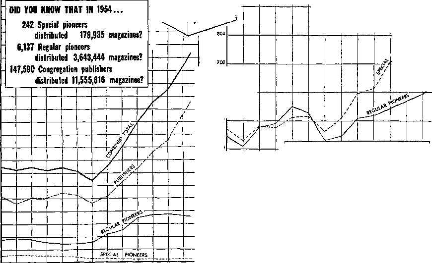

JUNE, 1955 “He shall not be afraid of evil tidings: his heart is fixed, BROOKLYN N Y
___________ trusting in Jehovah.”—Psalm 112: 7, AS. ’ ’ *
1 Shout aloud, you servants of Jah I Here is good news! Here is the answer to the question: "Can we make it 184,763 publishers?” Wb did make it, thanks to Jehovah's blessing upon “Our more than usual good effort.” Tn fact, Jehovah so richly blessed us that we exceeded our goal by 2,357 publishers. We all feel like shouting Hallelujah!
2 Looking back just a moment, we And that our December report showed a 5.1) per cent increase over last year’s average publishers. It was the best December report on record, but it left us 4.1 pel- cent short of our desired 10 per cent increase and with a long way to go to make the 20 per cent increase in April.
3 Were Jehovah’s people dismayed or discouraged? No! They saw greater effort was needed, and on learning of the siiecial activity for April all were thrilled! Everywhere publishers reflected the spirit “we can make it" with Jehovah’s blessing.
4 April 3 saw capacity audiences virtually pack out every Kingdom Hall. After hearing the stirring public talk, publishers and good-will persons alike enthusiastically received copies of the new booklet for immediate distribution. Initial booklet supplies melted like a snowball in a tropical sun. Then came April 7, Memorial, and in the United States
“Not Forsaking the Gathering of Ourselves Together” National Assemblies Begin
1 Assemble for instruction ! This was Jehovah’s command to the nation of Israel, and, likewise, Christians are required to meet regularly, “not forsaking the gathering of ourselves together.” (Deut. 31:12: Heb. 10:25) Not only do we meet together for congregation meetings each week, but beginning this month and extending throughout the summer, Jehovah's people will be assembling at conventions In this country and in Europe.
2 June will provide the opportunity to use a book offer in covering territory. Eor many congregations unalone 244,959 persons of good will attended, and, of these, only 7,735 professed to be of the remnant. What a “great crowd”! Seventy-five per cent of these reported field service. Let us all continue to help these new ones and, too, look after the other 25 per- cent not yet going out in the field service from house to house.
5 It is gratifying to know that thousands of newly interested persons were helped to begin their first organized service by you devoted servants of Jehovah. By the end of April 3,713,379 booklets were placed. Congregation publishers averaged 17; vacation and regular pioneers, 112; and special pioneers, 149. Excellent ! We had to ship 3,000,000 more copies to replenish supplies. By the end of May all booklets should be distributed. If we do distribute them, it will mean 8,000,000 booklets in homes in the United States.
6 It was a thrill here in the Brooklyn office to see report after report come in stating “We Made It!” and, on totaling the reports, to find the new all-time peak of 187,120 publishers. A 21.5 per cent increase! Congregations to the number of 1,905 reported they made or exceeded their 20 per cent increase, to compare with 1,220 last year. We feel sure congregations who have not yet made their 20 per cent increase will put forth every efassigned territory work begins. All congregations should make a special effort to cover the rural or city territory that has not been reached in recent months. The offer will be two books and two booklets on a contribution of $1. Place the new booklet wherever possible. Are you prepared with several three- to eight-minute sermons? Are you following up the placements you make with ten- to fifteen-minute sermons? Start the month prepared and work toward the goal of starting at least one home Bible study during June. Also keep in mind the importance of assisting the new publishers that fort to do so before the end of August.
7 April is now over, but its final results are not. It is recorded in theocratic history as the greatest month yet for those in the United States. It was a month filled with surprises and blessings for all, a month we shall long remember. Since “We made it!” shall we slow down? No! you say. We must continue to praise Jehovah and help all of the thousands who have joined with us, and others too. Therefore, in June and all the months to come, let each of us be active and help new ones we have started to expand their ministry.
8 “I planted, Apollos watered, but God kept making it grow.”—1 Cor. 3:6, A'W.
UNITED STATES QUOTA FOR 1955 169,366 Publishers
April Report
Aw Av Av Pubs. Hrs. B-C Bi. St.
Total Pubs. 187,120
Public Meetings Held: 13,906 Subscriptions for Campaign: 353,492
1955 MEMORIAL REPORT Total Memorial Attendance: 244,959 Number of Partakers:
Attendance at Public Meetings: 150,454
started in April and May to continue active. Help them on to maturity.
3 Plan to share fully in all activity arranged. On Mundays spend at least two hours in house-to-house work and an hour or more making back-calls and conducting studies. Throughout the week you will have opportunity to witness and, on your Magazine Day, be sure to participate in magazine distribution. Young publishers and others are encouraged to enter the vacation pioneer service during the summer months. Of course, sharing in all activity means attending meetings regularly and aiding persons of good will to assemble with you. Absorb the good spiritual food provided by Jehovah and unselfishly use the knowledge you have in directing others to Jehovah’s organization for salvation.
Around the World with Jehovah’s Witnesses
Magazine Placements Increasing
The Society suggests that each publisher endeavor to place at least nine magazines every month and regular pioneers 90 and special pioneers 110. Are you regularly placing this number? The “Yearbook” shows a remarkable increase in magazine placements by publishers in various countries throughout the world. (39, 72) Truly Jehovah’s people more and more are becoming magazine-conscious.
Publishers in Puerto Rico have enjoyed a wonderful increase as a result of supporting Magazine Day activity and giving short, to-the-point magazine presentations. Generally, magazines can be presented very effectively in thirty to sixty seconds. Instead of averaging two magazines a publisher a week, they average better than three! (242) ;
Though Japan is a country filled with shrines and images, “The Watchtower” is doing a wonderful work. (188189) Each publisher placed more than 250 magazines during the year. That is an average of more than twenty a month! Brazil too reports a splendid increase. (100)
While the best way to place magazines is from house to house and store to store, other avenues are also open. Five publishers in Guatemala, alert to distribute magazines to bus and train travelers, soon averaged eighty magazines apiece a week. (168) Have you triAd it?
By putting into practice the various suggestions contained in this issue of the “Informant,” each publisher throughout the world will meet or exceed the monthly quota of magazines.
Which One Is “the Light of the World”?
Enclosed with this Informant is a letter addressed to the congregation servant concerning the special feature of the work that will be handled at the end of July, namely, sending letters and one of the booklets Christendom or Christianity—Which One Is “the Light of the World"! to clergymen and editors of newspapers, magazines and periodicals.
After arrangements have been made as to the list of persons to be written to, then such letters can be written and envelopes made out for mailing the letters and booklets. The letters can be written and dated July 25. 1955, and properly stamped and can then be dropped in the mail any time after July 25. It may be that some of the brothers who will be participating in this work will not be at home during the week following the New York assembly and therefore the suggestion is here made to draw the letters up beforehand so that they can be dropped in the mail any time after the 25th of July.
AN INTERESTING BOOK entitled “Jehovah's Witnesses—The New World Society” is being printed by Vantage Press, Inc., New York 1, N. Y., at $2.95 a copy. See our letter of May 10 if you want a copy.
YOUR SERVICE MEETING
Sharing Fully in Magazine Activity
For demonstration, prepare two charts, one showing the total magazines the congregation placed each year for the past five or ten years and another showing the average number of magazines placed per publisher per month during this service year.
SCENE I (3 min.) Magazine-territory servant talks on importance of placing magazines. Points out features such as current news, always fresh and alive, and wide coverage of subjects. Outstanding is frank, honest appraisal of world events, setting forth Jehovah’s kingdom as real hope of world. So easy to place magazines, all publishers, young and old, may take part. Analysis of activity needed to see how well publishers are sharing in magazine work.
SCENE II (8 min.) Congregation magazine charts are pointed to as congregation servant joins magazine-territory servant in examination of congregation’s progress in magazine activity. Is congregation as a group reaching the quota? [Use local figures.] On average, congregation may be doing well, but are all sharing? They turn to Publisher’s Record cards and find only ........
publishers are placing more than nine magazines a month......... are placing
but a few magazines or none. What can be done so all can reach the goal? Book study conductors can stress Magazine Day, urging all to engage, then taking lead in supporting it; also from service center thirty to sixty minutes before congregation book study time. Publishers must be conscious of need to include magazine activity in their weekly schedule of service. Those not able to meet with group on Magazine Day can use other opportunities, such as a little time before meetings. Children may have magazine routes or work house to house for an hour after school. Mothers might plan to pick up children after school and work with them, thus training them. Housewives might plan an hour or so a week to work with magazines in nearby territory. Many can
1 In recent weeks hundreds of letters have been received requesting changes in travel assignments. Since all travel space is now filled, it will be impossible to make all changes. The Society strongly urges delegates to endeavor to arrange their trips within assigned periods. No further changes can now be accepted; cancellation is the only alternative.
2 Since this movement is very large and comes at the height of the tourist season, it presents many problems. Delegates should expect certain changes in special train and flight schedules. Major changes are not expected. What the carriers of passengers do is beyond the Society’s control and delegates will just have to accommodate themselves to the circumstances.
3 It is vital that each person understands that no changes will be made in Europe, so there will be nothing gained in requesting such changes. Further, there will be no refund on unused special train tickets.
4 If you have not already done so be sure to notify European Conven-share in early evening work before congregation study or on other evenings. As servants look over cards of family known to have planned their affairs to share fully in magazine distribution, the following demonstration takes place to illustrate family activity
SCENE III (12 min.) Sister, talking to visiting couple from neighboring congregation, enthusiastically tells how family is working to have fuller part in magazine work. When she cannot participate in regular Magazine Day activity she plans her household chores so she can go out and offer magazines for an hour or so during the week Joyfully she relates the experiences she had in the house-to-house magazine work that very morning.
As they talk, children come home from magazine work following school Sister explains this is the day children have arranged to work after school Children excitedly tell of magazines placed and interest found. Already they have placed more than nine magazines apiece during the month. Visiting sister feels she too can schedule her housework to do magazine work during week, when unable to go out in day activity, and work with her children after school to help them get started
Father and son come in and join discussion. Father explains that secular work keeps him from Magazine Day activity, but he has scheduled house-to-house magazine work in early evenings. Results have been good and be is pleased that he now has fuller share in work. Son, who works with his father in the evenings, also enjoys work with group on Magazine Day and tells experience he had working store to store Father is joyful that entire family shares in magazine work and meets goal. Visiting brother appreciates suggestions and concludes he and his family will be able to meet goal by putting ideas into operation in their ministry schedule.
SCENE IV (2 min.) Servants recommend their course for all.
“Make Sure of AU Things?9
Earth and Its Destiny (page 110, starting with 1 Cor. 6:2, 3, to page 112)
Man and wife at home, after hearing news report, briefly discuss this world’s bad conditions. Wife (who is in the truth) tactfully turns conversation to New World blessings and explains to good-will husband conditions that will prevail.
The Society’s offices, factory and Bethel home will be closed from July 30 to August 14, inclusive, for the annual vacation. Orders and correspondence sent in during that period will not be handled until some time after the reopening of the offices. To avoid delays it will be necessary for you to anticipate your needs well in advance and place your orders in ample time for attention before the vacation period.
tions of any change whatsoever in your address from the time you submitted your reservation request. Your tickets and all other travel information will be sent to the address you have given to us.
1 Do not be of the frame of mind, “Shall I attend?” but rather, “Which convention shall I attend?” Why should there be any doubt, when Jehovah always provides so amply whenever he invites his people to come together in convention? Accept the bid thankfully and enthusiastically. Be there with the whole family!
2 Just think, there were 244,959 Jehovah's witnesses and their good-will companions present at the celebration of Memorial in the United States and Canada, the greatest total ever! What a thrill It would be for all of us, and what a wonderful witness would be accomplished, if all would he present at the several conventions on the North American continent during June and July! Have you completed your plans to attend? And tilled out your Room Request forms and mailed them to the city of your choice? Help others too, that is, those of good will, by arranging car groups to accommodate as many as you can bring. Since we are all eager to see the removal of this old world and the establishment in its entirety of the new, where can we learn more about it than by listening to the Sunday public talk. World Conquest Soon—by God’s Kingdom, to be delivered by the Society’s president. Of course, the entire five days will have programs highly important to true Christians, who are “the light of the world.”
3 While in attendance at the conventions you will want to share in field service and advertising. But do not wait until arriving at the convention to start. Witness en route, placing the monthly offer at every opportunity.
Assembly Conduct
4 The July 1, 1953, Watchtower contains an excellent article on “Showing Appreciation at Assemblies.” It is suggested that this material be reviewed on a service meeting shortly before your assembly time.
Volunteer Service
5 In order for a convention to function smoothly and be well organized much volunteer service is required. About one of every six attenders volunteers his service to assist in caring for our needs and comfort during conventions. Will you be one? Would you not like to help in one of the departments? Good I It will bring you joy and pleasant memories afterward to have been a servant to your brothers. So please fill out and- send your application for volunteer service to the convention you expect to attend.
6 Most large cities are afflicted with much thievery and vandalism,
Practicing True Love Every Day
1 In whom should man place his trust? What is one to believe in these most crucial times? Who is right? You know, for all of Jehovah’s witnesses know the answers to these and many other similar questions. Having this knowledge you want to use it, for Jehovah, impartial in his judgments, has stated clearly that all kinds of men have a right to know the reason why they exist. That is why he has taught his people to practice true love every day, speaking of his kingdom as mankind’s only hope.—1 John 3:18, NW.
2 Much is yet to be done! Now is the time and season to do it! Many more sheeplike ones need to be spoken to! Where shall we find them? In their homes, of course! During July we shall continue to do house-to-house preaching, using sermons, presenting a book and a booklet on a
1 Appreciating the need for publishers to be supplied with issues of the Watchtower and Awake! magazines in time for use in their ministry, the Society arranges its mailing schedule so that the magazines will be mailed from the factory well in advance of the date of issue (date shown on magazines). This is done so magazines will be received and distribution of them completed, in most cases, before the date of issue.
2 A number of inquiries have been received as to when distribution of magazines is to start. Therefore, it seems well to publish again the starting dates carried in an earlier issue of the Informant.
“The Watehtower” dated Start distrIhating t» public 1st of month 22d of preceding month
15th of month Sth of same month
"Awake'.” dated Start distributing to pnhlle
Sth of month 30th of preceding month
22d of month 13th of same month
3 Please observe that the release date is the date of release for distribution to the public, not the date that the magazines should be received, nor the date of publication. While most publishers will have their magazines before the release so we should like to caution all to exercise care against leaving anything showing inside their cars. Put whatever you leave in the trunk of the car. Lock your car whenever you leave it, even if it is for a few minutes. Remember too, pickpockets like to work in large crowds. Please be careful.
1 Keep in mind that attending will contribution of 50c. New, less experienced and mature publishers, all are invited and encouraged to have a full share practicing true love every day by preaching the good news.
3 Last year 1,883,698 books were placed by an average of 153,969 publishers. This is an average of over one book a month for a publisher. What are your individual and congregation averages so far this year? Are they above last year’s averages?
4 Assemblies are here ! In travel to and from convention cities be prepared and equipped to practice true love every day. Carry a sufficient supply of books, placing them wherever you can. An accurate record of time spent preaching and placements made should be kept and mailed to the congregation servant, if you are unable to report at the Kingdom Hall.
date, this will not always be the case, for at times there are mail delivery delays that may cause some congregations to receive magazines a little later than others and after the above dates set for public release.
4 The Society endeavors always fo arrange mailing so that all have their magazines before the release date. If magazines are received before the date of release they should be held until the proper date of release. If they are received after the release date, start using them right away. Magazines should be distributed as near to the date of issue in accord with the above schedule as possible. In most cases it will be possible to distribute the supply by the date shown on the magazine.
5 Having in mind placing at least nine magazines a publisher each month, publishers should make known to the magazine-territory servant the number of copies of The Watchtower and Awake! they wish to take regularly, so he can order them. Publishers h ave the responsibility of taking the magazines ordered for them and should distribute all the copies hs quickly as possible after date of release.
Loan copies of “This Good News of the Kingdom'' are limited. Loan orders will be handled in order received as quickly as possible.
be of great theocratic and spiritual value to us, and will truly help us to ‘keep our hearts fixed, trusting in Jehovah.’
serve this splendid progress. It manifests your sincere desire to share the blessings of these magazines with
1 To supply your ever-increasing demands for more magazines the Society is pleased to announce that in a few weeks work on the foundation of the factory will start. It is being constructed to produce chiefly one thing: magazines—The Watchtower and -licofcc/ the two magazines that you are demanding in ever-increasing numbers for distribution. While our present facilities are being taxed to near limit, this new factory will more than treble present production. To be sure, it will adequately supply the magazines we need! We hope that you who attend the New York convention will come to see the construction under way!
almost 8,000,000, an average increase of well over one million each year? Placements from 1942 to 1949 remained the same, due greatly to the paper shortage created by the war. But with an adequate supply available, in March, 1949, stress was placed on magazine distribution. Magazine Day was started and publishers were counseled: “One day a week will be devoted to the distribution of The Watchtower and Awake! on the streets, from house to house, store to store, and in other ways.” What happened as you responded to this service? The English Watchtower printing increased from 584,000 copies each issue to 1,513,000
people of good will. To increase distribution farther and to aid more publishers to share in this activity, it is suggested that each publisher place at least nine magazines each month, which averages about two each week and totals over a hundred magazines a year. Is this not a reasonable amount? Regular pioneers, along with circuit and district servants, will have as their goal 90 magazines each month and special pioneers 110. So far this year publishers are averaging 7.3 magazine placements each month, regular pioneers 53.9, special pioneers 00.9, district servants 73 and circuit servants 83. At this rate our magazine placements for 1955 will rise from 1954’s all-time high of 15,382,330 to over 17,000,000! Grand, is it not?
2 So that you can appreciate how magazine distribution in the United States has increased marvelously, we are glad to publish the graphs below. Study them carefully. How does your individual activity and that of your congregation compare?
3 The graphs show that since 1949 magazine distribution has more than doubled. Why were placements from 1942 (7,479,710) to 1949 (7,453,310) about the same? And why since 1949 have publisher placements increased
today and the English Awake! from 545,000 copies to 1,069,000 copies! In all languages a total of 2,000,000 copies of The Watchtower are printed and 1,325,000 copies of Awake! Truly the increase has been by leaps and bounds as publishers have increased their magazine placements!
4 The Society is very happy to ob-
5 By participating in Magazine Day activity regularly and following suggestions contained in this Informant. each one will soon be meeting and even surpassing his quota of magazines. With your increased activity in the field our present facilities will be inadequate to carry the load much longer, but, thanks to Jehovah, who provides all things, before long the new factory will be producing in ever greater numbers the two New World society journals.
22
21
MAGAZINE PLACEMENTS PER PUBLISHER PER YEAR
MAGAZINE PLACEMENTS PER YEAR
20
19
18
17
16
15
13
12
10
8
5
3
&
600
400
300
200
PUBtSHERS
1943 1944 1945 1946 1947 1948 1949 1950 195) 1952 1953 4954 1955
1943 1944 1945 1946 1 947 1948 1949 1950 1951 1952 1953 1954 1955
100 75 50 25
0
DID YOU KNOW THAT IN 1954...
Special pioneers placed
an average of 615 magazines a month?
Regular pioneers placed
an average of 49.5 magazines a month?
Congregation publishers placed
an average of 6.5 magazines a month?
500
4